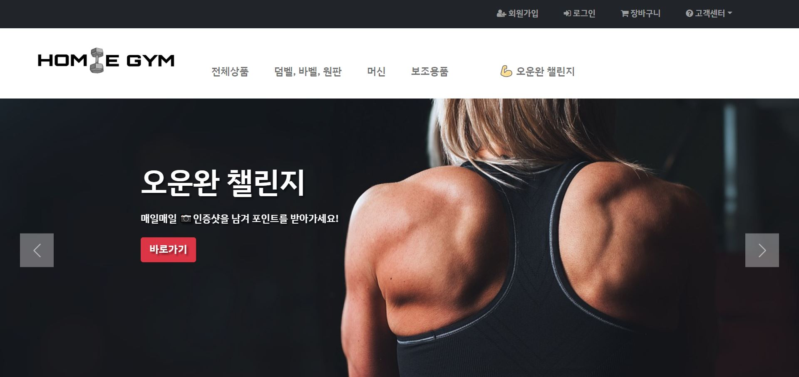
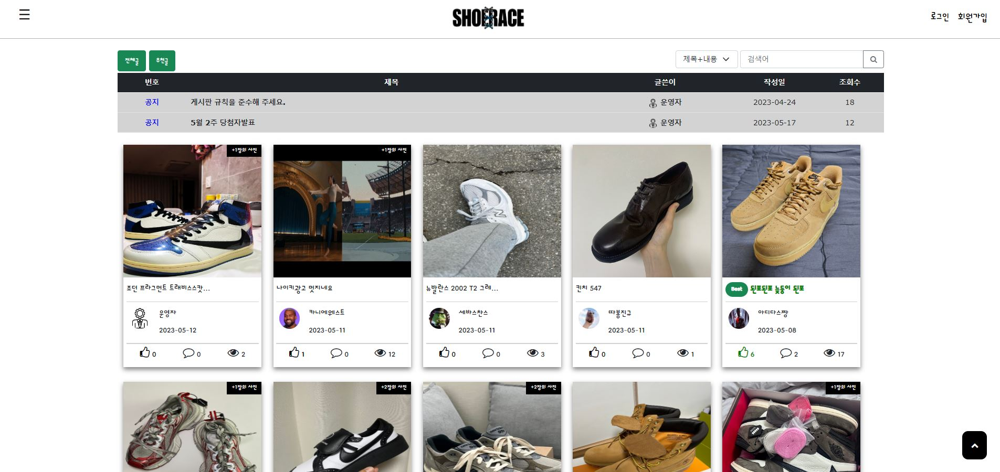

"좋은 설계를 바탕으로 좋은 소프트웨어가 생산된다."
이에 맞게 행동하고 노력하는 개발자가 되고 싶습니다.
새빨간 오류 메세지도 경험과 배움이라고 생각하는 개발자 정진규 입니다.
학점 3.87 / 4.5
총 113일 / 900시간

| 프로젝트 개요 | 개발환경 |
|---|---|
|
기간 : 2023.06.12 ~ 2023.07.12 (4주) 인원 : 2명 역할 : 팀장 1차 프로젝트인 커뮤니티 사이트는 관리자와 사용자의 페이지가 같은 파일에서 JSTL 조건문으로만 달리하여 구현하였습니다. 하지만 쇼핑몰 프로젝트는 관리자와 사용자 페이지가 나뉘게 된다면 보안, 기능 및 권한 제한, 사용자 경험, 유지 보수 및 확장성 측면에서 많은 이점을 얻을 수 있게 되어 팀장인 저는 관리자 페이지를 담당하기로 하였습니다. |
Language Java, HTML5, CSS3, JavaScript Tech JQuery, Ajax Database MariaDB FrameWork Spring, MyBatis, Bootstrap TOOL Eclipse, HeidiSQL, VSCode |
| 사용기술 | |
|
|
| 담당 업무 | |
담당 업무 : DB설계, 관리자 페이지(전체), 사용자 페이지(고객센터, 챌린지 이벤트)
|
|

| 프로젝트 개요 | 개발 환경 |
|---|---|
|
기간 : 2023.04.17 ~ 2023.05.12 (4주) 인원 : 2명 역할 : 팀장 첫 팀 프로젝트는 커뮤니티 사이트를 구현해보고 싶었습니다. 팀원과의 협의 후 역할 분담을 정확하게 나누고 진행하였습니다. |
Language Java, HTML5, CSS3, JavaScript Tech JQuery, Ajax Database MariaDB FrameWork MyBatis, Bootstrap TOOL Eclipse, HeidiSQL, VSCode |
| 담당 업무 | |
담당 업무 : 형상관리, db설계, 전체 페이지 디자인, 게시판, 댓글, 발매정보/발매 소식
|
|